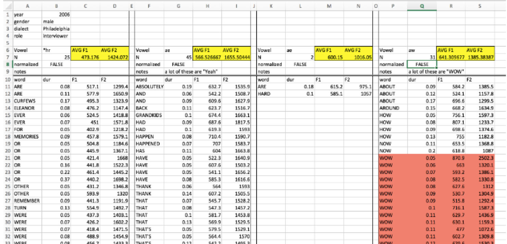

HSS8005 Stream C: Introduction to Quantitative Linguistics
Dr Danielle Turton: danielle.turton@newcastle.ac.uk
Overview
This course is:
- an introduction to analysing large-scale linguistic data sets in R
- aimed at linguists working with quantitative data
- mainly going to focus on phonetic, sociolinguistic and reaction time datasets, but the principles can be applied to any subfield of any kind
What this course is not
- An introduction to Natural Language Processing
- An introduction to corpus linguistics
- Discourse analysis, sentiment analysis etc.
Schedule
- Today: Intro to course and to R
- Thursday: Data visualisation
- Next Tuesday: Basic statistical tests
- Next Thursday: Data wrangling, advanced visualisation, statistical tests and requests!
Class website
You can follow the class website here: https://danielleturton.github.io/quantling
All of the materials we’ll be using can be found here for each session.
What is your research?
- Who are you and what do you want to analyse?
- What is your dependent variable?
- What about independent variables?

Introduction to R
Why use R?
- R is the statistics software paradigm of our day
- It’s free!
- It’s platform independent
- Packages for everything (constantly being updated)
- All the cool kids use it
This lesson’s goals
- Work with an R notebook (simpler than working with R proper for now)
- Read in and manipulate data
- Make some figures
R can be used as a calculator
The difference between R and RStudio…
“RStudio is like an Instagram filter over R, to make your R user experience better.” - Joe Fruehwald (R course)
- Check out Joe’s Workshop at this year’s Newcastle Postgraduate Conference in Linguistics
caption
Why are we using R?
The trend of SPSS and R based on Google Scholar articles
Data files
- Need to be
.csvor.txtNOT Excel - Need to have one token per row
Bad data formatting for R
- Never organise your data like this: 
Demonstration: importing and data basics
Importing data
- If you are importing
.txtfiles, useread.delim() If you are importing
.csvfiles, useread.csv()Also possible:
Double slashes for PC, single forward slashes for Mac
General tips
- R is case sensitive (it will treat an
sas a completely different character toS) - Don’t use spaces in your filenames and folders
- Softwrap your code by going to Tools > Global Options > Code and ticking Soft-wrap R source files.
Basics: data assignment
## [1] 10“There are only two hard things in Computer Science: cache invalidation and naming things.” — Phil Karlton
For best practices on naming variables, checkout the tidyverse style guide by Hadley Wickham
Factors and levels: factors
Our variables are called factors in R terminology.
## [1] 6596 34## [1] "sex" "occupation" "age" "age_group"
## [5] "town" "postcode_birth" "postcode_now" "bread"
## [9] "furniture" "clothing" "evening_meal" "group"
## [13] "foot_strut" "for_more" "one_gone" "book_spook"
## [17] "fur_bear" "sauce_source" "pour_poor" "eight_ate"
## [21] "bangor_banger" "mute_moot" "spa_spar" "thin_fin"
## [25] "give_it_me" "I_done_it" "it_was" "you_was"
## [29] "beaches_was" "I_werent" "they_was" "we_was"
## [33] "dress_what" "things_what"Factors and levels: factor levels
Our variables are called factors in R terminology. Each option for a factor is a factor level.
## [1] "don't rhyme" "rhyme"##Simple functions: head and tail, dim
## sex occupation age age_group
## 1 female Teacher 32 young
## 2 female Government Administrator 47 middle
## 3 male Management Consultant 61 old
## 4 female student 19 young
## 5 male Accountant 34 young
## 6 male Retired 63 old
## town postcode_birth postcode_now bread
## 1 Bishopton, Renfrewshire, Scotland, UK PA7 2021 roll
## 2 Dumbarton G82 AB22 roll
## 3 EDNBURGH EH15 AL2 roll
## 4 wigan WA3 B5 barm
## 5 Bellshill\nAtherstone CV9 B79 roll
## 6 Bristol BS8 BA12 roll
## furniture clothing evening_meal group foot_strut for_more
## 1 couch trousers dinner you all don't rhyme don't rhyme
## 2 sofa trousers dinner you don't rhyme don't rhyme
## 3 settee trousers dinner you don't rhyme don't rhyme
## 4 couch pants dinner you lot rhyme don't rhyme
## 5 couch trousers dinner you don't rhyme don't rhyme
## 6 sofa trousers dinner you don't rhyme don't rhyme
## one_gone book_spook fur_bear sauce_source pour_poor eight_ate
## 1 don't rhyme rhyme don't rhyme don't rhyme different same
## 2 don't rhyme rhyme don't rhyme don't rhyme different same
## 3 don't rhyme rhyme don't rhyme don't rhyme different same
## 4 rhyme rhyme don't rhyme rhyme different same
## 5 don't rhyme rhyme don't rhyme don't rhyme different same
## 6 don't rhyme don't rhyme don't rhyme rhyme same same
## bangor_banger mute_moot spa_spar thin_fin
## 1 different different different different
## 2 different different different different
## 3 different different different same
## 4 different different same different
## 5 different different different same
## 6 different different same different
## give_it_me
## 1 c. I've heard some people use this form.
## 2 d. A speaker of English might say this, but I haven't really heard it.
## 3 d. A speaker of English might say this, but I haven't really heard it.
## 4 a. I'd say this myself.
## 5 b. I wouldn't use it, but people from my area do.
## 6 c. I've heard some people use this form.
## I_done_it
## 1 b. I wouldn't use it, but people from my area do.
## 2 b. I wouldn't use it, but people from my area do.
## 3 c. I've heard some people use this form.
## 4 b. I wouldn't use it, but people from my area do.
## 5 d. A speaker of English might say this, but I haven't really heard it.
## 6 b. I wouldn't use it, but people from my area do.
## it_was
## 1 c. I've heard some people use this form.
## 2 c. I've heard some people use this form.
## 3 d. A speaker of English might say this, but I haven't really heard it.
## 4 d. A speaker of English might say this, but I haven't really heard it.
## 5 c. I've heard some people use this form.
## 6 b. I wouldn't use it, but people from my area do.
## you_was
## 1 c. I've heard some people use this form.
## 2 d. A speaker of English might say this, but I haven't really heard it.
## 3 c. I've heard some people use this form.
## 4 a. I'd say this myself.
## 5 c. I've heard some people use this form.
## 6 c. I've heard some people use this form.
## beaches_was
## 1 d. A speaker of English might say this, but I haven't really heard it.
## 2 d. A speaker of English might say this, but I haven't really heard it.
## 3 d. A speaker of English might say this, but I haven't really heard it.
## 4 d. A speaker of English might say this, but I haven't really heard it.
## 5 c. I've heard some people use this form.
## 6 c. I've heard some people use this form.
## I_werent
## 1 NA
## 2 NA
## 3 NA
## 4 NA
## 5 NA
## 6 NA
## they_was
## 1 c. I've heard some people use this form.
## 2 c. I've heard some people use this form.
## 3 c. I've heard some people use this form.
## 4 d. A speaker of English might say this, but I haven't really heard it.
## 5 c. I've heard some people use this form.
## 6 b. I wouldn't use it, but people from my area do.
## we_was
## 1 c. I've heard some people use this form.
## 2 c. I've heard some people use this form.
## 3 c. I've heard some people use this form.
## 4 d. A speaker of English might say this, but I haven't really heard it.
## 5 c. I've heard some people use this form.
## 6 c. I've heard some people use this form.
## dress_what
## 1 NA
## 2 NA
## 3 NA
## 4 NA
## 5 NA
## 6 NA
## things_what
## 1 c. I've heard some people use this form.
## 2 d. A speaker of English might say this, but I haven't really heard it.
## 3 c. I've heard some people use this form.
## 4 a. I'd say this myself.
## 5 c. I've heard some people use this form.
## 6 b. I wouldn't use it, but people from my area do.## sex occupation age age_group town
## 6591 female hairdresser 31 young Germany. Catterick and york
## 6592 male IT Manager 45 middle Newton Aycliffe, County Durham.
## 6593 male Engineer 45 middle Sheffield
## 6594 male Radio technician 30 young South Molton (Devon)
## 6595 female Student 19 young Ashbourne, Derbyshire
## 6596 female Student 18 young Sale, Cheshire
## postcode_birth postcode_now bread furniture clothing
## 6591 YO10 YO8 roll sofa trousers
## 6592 DL5 YO8 bun sofa trousers
## 6593 S31 YO8 bun sofa trousers
## 6594 EX36 BH9 roll sofa trousers
## 6595 DE6 1JF DE6 bun, cob, roll sofa trousers
## 6596 M33 CW11 barm settee trousers
## evening_meal group foot_strut for_more
## 6591 tea you lot don't rhyme rhyme
## 6592 tea you rhyme rhyme
## 6593 tea you lot rhyme rhyme
## 6594 tea if light meal; dinner if big meal you guys don't rhyme rhyme
## 6595 tea, Dinner for a restaurant you guys don't rhyme rhyme
## 6596 you don't rhyme rhyme
## one_gone book_spook fur_bear sauce_source pour_poor eight_ate
## 6591 rhyme don't rhyme don't rhyme rhyme same same
## 6592 rhyme don't rhyme don't rhyme rhyme different same
## 6593 rhyme don't rhyme don't rhyme rhyme different different
## 6594 don't rhyme don't rhyme don't rhyme rhyme same same
## 6595 rhyme don't rhyme don't rhyme rhyme same same
## 6596 rhyme don't rhyme don't rhyme rhyme same same
## bangor_banger mute_moot spa_spar thin_fin
## 6591 different different same same
## 6592 different different same different
## 6593 different same same same
## 6594 same same same different
## 6595 same different same different
## 6596 different different same different
## give_it_me
## 6591 c. I've heard some people use this form.
## 6592 d. A speaker of English might say this, but I haven't really heard it.
## 6593 a. I'd say this myself.
## 6594 a. I'd say this myself.
## 6595 b. I wouldn't use it, but people from my area do.
## 6596 b. I wouldn't use it, but people from my area do.
## I_done_it
## 6591 c. I've heard some people use this form.
## 6592 e. No native speaker of English would say this.
## 6593 b. I wouldn't use it, but people from my area do.
## 6594 d. A speaker of English might say this, but I haven't really heard it.
## 6595 a. I'd say this myself.
## 6596 b. I wouldn't use it, but people from my area do.
## it_was
## 6591 b. I wouldn't use it, but people from my area do.
## 6592 b. I wouldn't use it, but people from my area do.
## 6593 c. I've heard some people use this form.
## 6594 c. I've heard some people use this form.
## 6595 e. No native speaker of English would say this.
## 6596 c. I've heard some people use this form.
## you_was
## 6591 c. I've heard some people use this form.
## 6592 b. I wouldn't use it, but people from my area do.
## 6593 a. I'd say this myself.
## 6594 c. I've heard some people use this form.
## 6595 b. I wouldn't use it, but people from my area do.
## 6596 c. I've heard some people use this form.
## beaches_was
## 6591 c. I've heard some people use this form.
## 6592 e. No native speaker of English would say this.
## 6593 a. I'd say this myself.
## 6594 d. A speaker of English might say this, but I haven't really heard it.
## 6595 d. A speaker of English might say this, but I haven't really heard it.
## 6596 e. No native speaker of English would say this.
## I_werent they_was
## 6591 NA b. I wouldn't use it, but people from my area do.
## 6592 NA b. I wouldn't use it, but people from my area do.
## 6593 NA a. I'd say this myself.
## 6594 NA c. I've heard some people use this form.
## 6595 NA b. I wouldn't use it, but people from my area do.
## 6596 NA b. I wouldn't use it, but people from my area do.
## we_was
## 6591 c. I've heard some people use this form.
## 6592 b. I wouldn't use it, but people from my area do.
## 6593 a. I'd say this myself.
## 6594 c. I've heard some people use this form.
## 6595 d. A speaker of English might say this, but I haven't really heard it.
## 6596 b. I wouldn't use it, but people from my area do.
## dress_what things_what
## 6591 NA a. I'd say this myself.
## 6592 NA b. I wouldn't use it, but people from my area do.
## 6593 NA a. I'd say this myself.
## 6594 NA c. I've heard some people use this form.
## 6595 NA b. I wouldn't use it, but people from my area do.
## 6596 NA e. No native speaker of English would say this.##Simple functions: dim and colnames
## [1] 6596 34## [1] "sex" "occupation" "age" "age_group"
## [5] "town" "postcode_birth" "postcode_now" "bread"
## [9] "furniture" "clothing" "evening_meal" "group"
## [13] "foot_strut" "for_more" "one_gone" "book_spook"
## [17] "fur_bear" "sauce_source" "pour_poor" "eight_ate"
## [21] "bangor_banger" "mute_moot" "spa_spar" "thin_fin"
## [25] "give_it_me" "I_done_it" "it_was" "you_was"
## [29] "beaches_was" "I_werent" "they_was" "we_was"
## [33] "dress_what" "things_what"Packages
- What are packages?
- The first time you use them, you will need to install the packages (you only need to do this once)
install.packages("dplyr")
install.packages("ggplot2")- Load the packages
library(dplyr)
library(ggplot2)